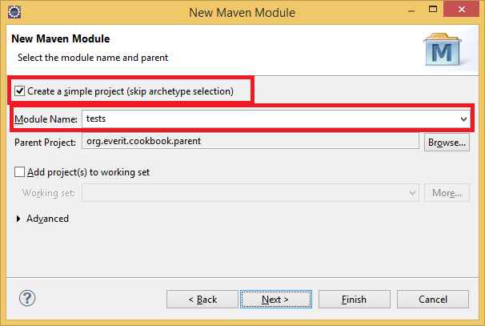
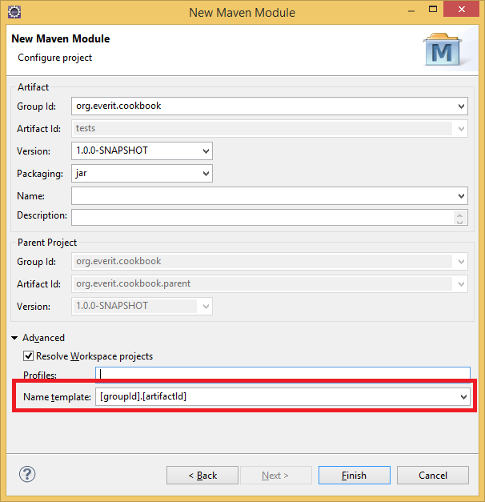

Creating the project frame
Creating the project frame
In this chapter, we will create a dummy project that contains nothing else, but a parent project, a sample component and a test for that component.
The sample application that will be developed during the chapters of this CookBook is available in a Github repository. Each chapter of the book is a branch in that repository. For this chapter, we need the first, 00 - initial branch, which is basically an empty folder. Later, it will be possible to jump between chapters, just by switching between branches.
Start Eclipse.
Check out the 00-initial sample repository from the https://github.com/everit-org/cookbook.git Git repository.
Start Eclipse
Open the Java EE perspective (Window -> Open Perspective -> Other..., select Java EE from the list)
On the left side, you will see the Project Explorer. Right click and select New -> Project...
Select "Maven Project" from the list

Click Next. On the next screen
Select "Create a simple project"
Uncheck "Use default Workspace location" checkbox
Select the folder where the Git repository was checked out to

In the next window, define the following values (you must open the Advanced menu to be able to specify everything):
Artifact
Group Id: org.everit.cookbook
Artifact Id: org.everit.cookbook.parent
Version: 1.0.0-SNAPSHOT
Packaging: pom
Click on the Finish button
We would like to skip the parent and tests projects from the deployment and the site generation. To do that, add the following lines to the pom.xml:
<properties>
<maven.site.skip>true</maven.site.skip>
<maven.site.deploy.skip>true</maven.site.deploy.skip>
<maven.deploy.skip>true</maven.deploy.skip>
</properties>
Delete the src directory, as we do not need it in the parent project.
Add a file named ".gitignore" next to the pom.xml. Although we work with Eclipse, we would not like to commit any IDE related file accidentally. The content of the .gitignore file should be:
/.project /.settings
The core project contains the business logic and the definition of the persistent schema it uses directly. The created parent project makes it possible to compile the sub-modules together. However, we do not want the project to inherit any settings from its parent, therefore, we will define the org.everit.config.main project as the parent of the core project.
In the project explorer, click on the org.everit.cookbook.parent project with the right mouse button and select New -> Other...
Select the "Maven Project" item from the list in the new window and click "Next".
On the next page
Select the "Create a simple project" checkbox
Uncheck the "Use default Workspace location" checkbox
Append "/core" to the parent project folder in the location input box

On the next page define the following values:
Artifact
Group Id: org.everit.cookbook
Artifact Id: org.everit.cookbook.core
Version: 1.0.0-SNAPSHOT
Packaging: jar
Parent project
Group Id: org.everit.config
Artifact Id: org.everit.config.main
Version: 6.0.1
Open the pom.xml file of the parent project again and add the following lines:
<modules>
<module>core</module>
</modules>
We have just defined that when we compile the parent project, the core should be compiled as well.
Create the .gitignore file in the core project
Delete the src/test/java and serc/test/resources folders from the core project (in the Project Explorer view as it will change the project build properties as well) as tests will be in a separate module.
Open the pom.xml file of the core project and insert lines to define that the module is based on Java 8:
<properties> <maven.compiler.source>1.8</maven.compiler.source> <maven.compiler.target>1.8</maven.compiler.target> </properties>
Insert the following snippet also into the pom file:
<packaging>bundle</packaging>
<build>
<plugins>
<plugin>
<groupId>org.apache.felix</groupId>
<artifactId>maven-bundle-plugin</artifactId>
<version>2.4.0</version>
<extensions>true</extensions>
<configuration>
<instructions>
<Bundle-SymbolicName>${project.artifactId}</Bundle-SymbolicName>
<Import-Package>
*
</Import-Package>
<Export-Package>org.everit.cookbook</Export-Package>
</instructions>
</configuration>
</plugin>
</plugins>
</build>
Add the Declarative Services and Metatype codegenerator configuration fragment to the pom.xml of the core project.
Due to the reason that Maven settings have been changed, the project has got errors. To solve them, press the right mouse button on the project in the Project Explorer and select "Maven -> Update Project...". In the new window, select the Ok button.
Finally add your license-maven-plugin configuration to the pom.xml of the core project. Note that every time you add a new source file (.java, .xml, .properties, etc) and maven builds your project, it will check the files for license headers. If the build fails, execute the "mvn license:format" command on your maven project to add the license headers. After that the build will not fail due to missing license headers.
We will implement a simple User management component that handles users with two pieces of information: name and a birth date. At this point, our database will be a simple Map in the memory.
Create a new interface in the core project called "org.everit.cookbook.UserService".
We leave this interface empty. Functions will be implemented in the next chapter.
In the end, the source of the interface should look like this:
package org.everit.cookbook;
public interface UserService {
}
The test module will contain the integration and/or unit tests for the core module. The tests are separated into a different maven module as they should be placed into a separate OSGi bundle. In this part, a "Hello world" test will be created.
In the project explorer, click on the org.everit.cookbook.parent project with the right mouse button and select New -> Other...
Select the Maven Module item from the list in the new window and click "Next".
On the next page
Select the "Create a simple project" checkbox
Write tests to the Module name field.
Click Next
On the next page open the Advanced part and select the [groupId].[artifactId]" Naming template.
The Tests project is imported into your Eclipse with its full name. However, the ArtifactId does not match the naming convention of the previous modules. Open the pom file of the Tests project and replace the value of the artifactId with "org.everit.cookbook.tests".
Create the .gitignore file in the core project
Add the core project as a dependency of the test project. You can do it in several ways. One of the most refactor-safe way is the following:
<dependency>
<groupId>${project.groupId}</groupId>
<artifactId>${project.groupId}.core</artifactId>
<version>${project.version}</version>
</dependency>Delete the src/test/java and serc/test/resources folders from the tests module.
Open the pom.xml file of the tests project and insert the following lines to define that the module is based on Java 8:
<properties> <maven.compiler.source>1.8</maven.compiler.source> <maven.compiler.target>1.8</maven.compiler.target> </properties>
Insert the following snippet also into the pom file:
<packaging>bundle</packaging>
<build>
<plugins>
<plugin>
<groupId>org.apache.felix</groupId>
<artifactId>maven-bundle-plugin</artifactId>
<version>2.4.0</version>
<extensions>true</extensions>
<configuration>
<instructions>
<Bundle-SymbolicName>${project.artifactId}</Bundle-SymbolicName>
<Import-Package>
*
</Import-Package>
<Export-Package />
<EOSGi-TestNum>0</EOSGi-TestNum>
</instructions>
</configuration>
</plugin>
</plugins>
</build>
Please note, that there is a new custom MANIFEST header called EOSGi-TestNum. The test runner solution needs that. In case of a full build, it waits until the expected number of tests are available. For more information, please see the documentation of testrunner module.
Add the Declarative Services and Metatype codegenerator configuration fragment to the pom.xml of the tests project.
Due to the reason that Maven settings have been changed, the project has got errors. To solve them, press the right mouse button on the project in the Project Explorer and select "Maven -> Update Project...". In the new window, select the Ok button.
Add the following plugin to the pom.xml file of the tests module:
<plugin>
<groupId>org.everit.osgi.dev</groupId>
<artifactId>eosgi-maven-plugin</artifactId>
<version>3.1.0</version>
<executions>
<execution>
<id>integration-test</id>
<phase>integration-test</phase>
<goals>
<goal>integration-test</goal>
</goals>
</execution>
</executions>
<configuration>
<environments>
<environment>
<id>felixtest</id>
<framework>felix</framework>
</environment>
</environments>
</configuration>
</plugin>
Add the Richconsole dependency to the tests project:
<dependency> <groupId>org.everit.osgi.dev</groupId> <artifactId>org.everit.osgi.dev.richconsole</artifactId> <version>1.2.1</version> </dependency>
Richconsole will make it possible to deploy the bundles rapidly, without restarting the OSGi container.
Add the Junit4 testrunner dependency to the tests project:
<dependency> <groupId>org.everit.osgi.dev</groupId> <artifactId>org.everit.osgi.dev.testrunner.junit4</artifactId> <version>3.0.3</version> </dependency>
This module and its dependencies will be responsible for catching your tests in the running OSGi container.
Add the Service Component Runtime (Declarative Services implementaiton) dependency to the tests project:
<dependency> <groupId>org.apache.felix</groupId> <artifactId>org.apache.felix.scr</artifactId> <version>1.8.2</version> </dependency>
This is the implementation of Declarative Services. We will implement several DS components later. Felix SCR is responsible for picking them up in the runtime environmnent.
We will create our first test. It will do nothing else, but write out a "Hello world" onto the standard output.
Create a new class in the tests project with the following name: org.everit.cookbook.tests.UserServiceTest
Add the @Component annotation to the newly created class (org.apache.felix.scr.annotations.Component)
Add the @Service annotation to the UserServiceTest class and pass the class type as the value to the annotaiton.
Add the @Properties annotation to the UserServiceTest class with the following two properties:
eosgi.testEngine=junit4
eosgi.testId=UserServiceTest
Add a method with the following attributes:
After this part, your class should have the following source:
package org.everit.cookbook.tests;
import org.apache.felix.scr.annotations.Component;
import org.apache.felix.scr.annotations.Properties;
import org.apache.felix.scr.annotations.Property;
import org.apache.felix.scr.annotations.Service;
import org.junit.Test;
@Component
@Service(UserServiceTest.class)
@Properties({
@Property(name = "eosgi.testEngine", value = "junit4"),
@Property(name = "eosgi.testId", value = "UserServiceTest")
})
public class UserServiceTest {
@Test
public void testCreateAndGetUser() {
System.out.println("Hello world");
}
}You have one test. Open the pom.xml file of the tests project and change the value of EOSGi-TestNum to 1.
Run "mvn clean install" again and see the success of your test on the console.
Check the tests/target/eosgi-report/felixtest directory and see the logs that were created during the integration-test phase of maven. You will see:
JUnit test result files. You can drag the XML and drop it onto Eclipse and you will see the results in the same way as ordinary JUnit test results are shown.
The content of standard error and standard output in log files. You will be able to find the "Hello world" line in system-out.txt